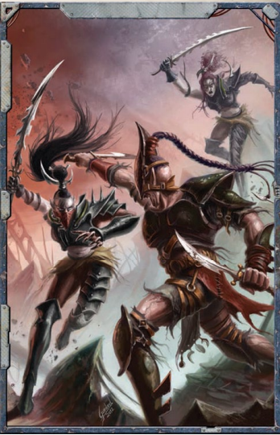

如果探险者能够从枯刃斗教的奴隶中招募到一些盟友，他们逃脱的机会便会大大增加。这些NPC来自各种不同的背景，有些是信仰帝国的坚定帝皇仆人，有些是来自尖啸漩涡的混沌信徒，还有些是被黑暗灵族掠袭者从科洛努斯扩区俘虏的异形。作为枯刃斗教的奴隶，探险者可能被叫去与这群形形色色的囚犯并肩作战，也可能被叫去与他们为敌，迫使他们面对自己根深蒂固的仇恨，或处理与帝国及其众多敌人之间的恩怨。这些同囚者中的每一位都可以帮助探险者逃脱影脊竞技坑，也可以帮助他们偷取灵魂掠夺者，前提是探险者能够赢得他们的支持。在许多情况下，探险者与某个异形或叛徒NPC之间唯一的共同点，便是摆脱奴役的共同愿望，以及对枯刃斗教或裂爪阴谋团的憎恨。
下文详述的NPC构成了潜在盟友和敌人的群体，他们既可以帮助探险者逃脱，也可以使他们的计划复杂化。一旦探险者遇到多莫斯并权衡了胜算，他便认定探险者是他逃脱的最佳机会。为此，他建议他们尝试招募其他奴隶加入他们的事业，并列出他认为最能干、最熟练的人员名单，这些人能提高他们的胜算。主持人可以利用多莫斯作为关于奴隶及其动机的信息来源，甚至可以安排引荐（因为多莫斯在这里的时间比其他任何奴隶都要长），但赢得这些奴隶的支持则需要探险者自己努力。获得一名奴隶的支持可能涉及许多不同的事情，因为每个奴隶除了逃脱之外，还有自己的目的。每个奴隶还带来了专业技能和不同工具的获取渠道，以协助逃脱，以及日后协助偷取灵魂掠夺者的额外支持。
无论好坏，每个奴隶都将自己的仇恨和信念带入了囚禁之中。这意味着当探险者聚集盟友并煽动起义时，他们必须应对一些奴隶拒绝与其他奴隶合作，甚至如果他们感到被排除在探险者的计划之外，便转向黑暗灵族的情况。如果探险者不谨慎行事，他们可能会发现自己被已经结交的盟友排斥，或被困在由固执之人带入竞技场的旧恨之间。这意味着探险者每结交一个盟友，也可能同时树一个敌人，这个敌人可能因为各种原因对他们的计划造成致命影响。这些敌人可以通过多种方式处理，但通常需要在竞技场的沙地上采取直接而永久性的解决方案。
卢德沃斯·塔恩，被俘的帝国之拳军士修士
卢德沃斯·塔恩是一名星际战士，也是他的帝国之拳小队在与黑暗灵族掠袭部队交战中，败方仅存的幸存者。塔恩是经历过数十年战争的老兵，脸上布满深深的伤疤，但双目依旧锐利。作为一件珍贵的战利品，他先被献给扎尔加恩及其血伶人德雷卡鲁斯，但在血伶人无法击垮他的意志之后，他被送往竞技坑，交由枯刃斗教处置，在竞技场中战死。他的力量和威名在阴影枢纽的居民中堪称传奇，许多异形前来观看这位战士战斗，同时买卖他们的奴隶。枯刃斗教的人类奴隶们敬畏这位巨人，他在许多人心中已成为希望与帝国力量的象征。塔恩战斗是为了不让他的战团因接受失败而蒙羞，并期盼有朝一日能够逃脱，回到他的兄弟们身边。塔恩是帝皇和帝国的狂热仆人，虽然他是一股强大的助力，但如果探险者与异形走得太近，或与混沌的仆从有所往来，他也可能成为一个危险的敌人。在这种情况下，一旦重获自由，他很可能会转而攻击那些他认为不洁之人，砍倒与玩家角色合作的异形和其他盟友，使探险者陷入必须在星际战士面前选边站的危险境地。
与其他大多数角斗士不同，塔恩在竞技坑中的比赛间隙被关押在竞技场附近的牢房中，由连他都无法挣脱的精金镣铐束缚。探险者可以不太费劲地探访他的牢房，但将他从其中释放出来则完全是另一回事。
招募条件：卢德沃斯·塔恩与任何奴隶一样渴望逃脱，为此他最想要的是找回他的动力盔甲和个人武器。这些物品作为战利品存放在安雅拉的私人房间中。任何能取回它们的人都会赢得他的尊重，并大大提高塔恩的战斗效率。
支持方式：塔恩是一台战斗机器，尤其是在装备了武器和盔甲之后，虽然他并非不朽，但他的力量可以证明是巨大的财富。这使得逃离影脊竞技坑更可行，更不用说偷取灵魂掠夺者的尝试了。他的支持也更容易说服其他帝国忠诚者加入叛乱，尽管这也让那些熟悉帝皇死亡天使的持异议者和异形感到不安。
盟友与敌人：塔恩可以忍受探险者与异形结盟，直到他们成功逃脱，但他不能容忍灵能者奈娅·特罗梅金的存在，更不用说真正的混沌特工了。
主持人指导：死亡天使
使用卢德沃斯·塔恩的主持人应确保，尽管他的存在配得上强大的阿斯塔特修士，但他不应盖过探险者的风头。处理这一问题的方法有很多，但大多数都归结为：每当塔恩可能抢走探险者的光芒时，就将他与队伍分开。当然，塔恩仍应像其他联系人一样对探险者非常有用，但在任何情况下，他都不应让他们在自己故事中感到被边缘化。以下列出了一些可用于在关键时刻将塔恩移出画面的困难：
·如果在起义开始时探险者尚未归还他的盔甲和武器，塔恩修士会告知他们，他有责任取回这些圣物，并会离开一段时间去取回它们。
·多莫斯贤者计算出，如果叛军能将守卫巡逻队从兽栏引开，在斗教领地中制造混乱，起义的成功率最高。在他们将他从牢房释放后，塔恩修士会主动提出带领一支小队将敌人引开，而探险者则执行计划。
·在叛乱前夕，一名强大的梦魇冠军正在访问影脊竞技坑，他们的某个联系人将其标记为威胁。塔恩修士自愿独自面对他并将其击败，以便探险者可以不受阻碍地追踪其他目标。
·（此条为译者个人爱好及群友智慧结晶）探险者意外取得一套帝国之拳战团的神圣遗物，看起来像是一套银丝制连体衣，在身后的位置上有“帝国之拳”的微小烙印。将这套遗物交给塔恩修士后，不苟言笑的星际战士将表现出罕见的激动与渴望。修士会说明这正是战团流传最久的万年圣物“痛苦手套”之一。他脱去衣服，在探险者倾情帮助下穿上紧身衣，接通能源。随后不知是黑暗灵族对圣物进行过特殊的邪恶改造，还是出于其他更加难以想象的亵渎原因，修士开始发出痛苦的嚎叫，面色发红，从此不省人事。
安亚·沈船长，“敌意交易号”指挥官
探险者和他们的舰船并不是唯一因轻信轻松利润的承诺而栽在黑暗灵族诡计之下的船只。被枯刃斗教奴役的人中包括“敌意交易号”的船长安亚·沈，以及她的大部分船员。沈船长是一位身材结实的中年女性，举止粗犷，对蠢人缺乏耐心，但对巨额利润有着敏锐的眼光。与探险者们一样，她被关于与异形贸易能带来巨大财富的黑暗传说所吸引，来到了阴影枢纽，并且她对参与冷贸易从未有过任何顾虑。“敌意交易号”从落脚港出发，沿着沈花费巨资购买的古老星图穿越网道，最终将船长和她的船员带到了黑暗灵族的前哨站。尽管阴影枢纽危机四伏，如果沈没有屈服于她嗜赌的弱点，她本可以带着大笔异形科技或奴隶的财富全身而退。令她懊恼的是，安雅拉在竞技场中击败了她的冠军，使她输掉了舰船和船员，而剃刀之网的阴影则断绝了任何反悔的念头。
从那天起，沈一直在枯刃斗教的奴隶围栏中挣扎求生，她的船员在她身边逐渐凋零。她梦想着获得自由的机会，夺回她的舰船，并向安雅拉复仇。她对加入探险者的事业感兴趣，甚至有可能他们已经在科洛努斯扩区或卡利西斯星区拥有共同的联系人。一旦他们逃脱，沈还可以在后续冒险中证明自己是一位有价值的盟友，甚至可以为互利共赢而与探险者的王朝建立持久的联盟。
招募条件：安亚·沈想要一个向安雅拉复仇的机会，或者至少让这个傲慢的异形吃点苦头。如果探险者能找到办法羞辱或伤害枯刃斗教的自尊，或者更好的是，安雅拉本人，沈便同意加入他们。
支持方式：一旦沈获得自由，如果她能重新与她的舰船会合，她可以对探险者提供巨大的帮助，并用她的舰船在阴影枢纽上空的战斗中支持他们对抗裂爪阴谋团。她的舰船也可以用于帮助探险者夺回自己的舰船，或策划一次逃入虚空的行动。“敌意交易号”是一艘浩劫级商船劫掠舰。
盟友与敌人：沈在结盟方面相当开放，虽然她并不真正信任任何人，但她几乎可以与探险者招募的任何其他NPC合作。鉴于她在竞技坑中的经历，她对灵族和黑暗灵族（和几乎所有人类一样，她看不出这两者之间的区别）始终保持警惕。
纳什里克·哈赫，野性克鲁特
在被枯刃斗教奴役的奴隶中，也有众多异形，其中不乏克鲁特人。其中最杰出的是一位名叫纳什里克·哈赫的克鲁特战士，她是耶利哥回廊战斗的老兵，也是其族群落入黑暗灵族之手后少数幸存者之一。与所有克鲁特人一样，哈赫身形高大威严，但她在竞技坑中也留下了伤痕：绿色的皮肤上布满了斑驳的褪色，喙上有一道长缺口，不在战斗时还会不时抽搐。哈赫已经相当适应了奴隶和战斗的生活，尽管她仍受到吞食注满黑暗灵族化学增强剂的血肉所带来的生理和心理后遗症的影响。哈赫的塑形者也在使她沦为奴隶的那次掠袭中被杀，她感到失去了曾经拥有的方向与指引。哈赫是一名能干的战士和凶残的敌人，在逃脱和竞技场战斗中都能为探险者所用，但他们必须找到与她沟通的方法，因为她只会说母语和钛族语言。
如果探险者能将她争取过来，纳什里克·哈赫还会带来另外六名克鲁特人（她部族的残余）。只要探险者善待他们，并允许他们享用众多阵亡敌人的血肉，她的部族即使在阴影枢纽之外也能成为探险者坚定的盟友。哈赫幸存的族人使用《行商浪人》核心规则书第377页的克鲁特雇佣兵属性表，但使用与纳什里克·哈赫相同的装备列表。
招募条件：纳什里克·哈赫想要从强大敌人的尸体上饱餐一顿，并完成她族人的仪式。通常，比赛结束后尸体会被迅速从竞技坑中移走，角斗士不被允许逗留。因此，克鲁特人只能靠战斗期间撕扯下来的血肉果腹，而这些血肉往往被黑暗灵族使用的各种药物所污染。如果探险者能为哈赫杀死或以其他方式弄到这样一具尸体，并给她时间好好进食，她便会认为自己欠了他们一份人情，并全力支持他们的事业。
支持方式：哈赫和她的克鲁特同伴为任何逃脱尝试都增加了急需的武力，一旦战斗开始，他们在凶猛程度上是任何人类奴隶都无法比拟的。克鲁特人还能在日后探险者为阴影枢纽和灵魂掠夺者的战斗中提供帮助，一旦获得他们的忠诚，便毋庸置疑。
盟友与敌人：克鲁特人对探险者可能招募的任何其他NPC都没有意识形态上的问题，因为他们不受过多的道德或宗教教条的束缚。不过，他们有时会用不加掩饰的饥饿目光打量他们的盟友（包括探险者），如果一位有价值的战士在战斗中阵亡，他们可能会询问是否可以通过吞食他的血肉来纪念死者，这会让许多其他NPC感到不适。
奈娅·特罗梅金，亚空间女巫
奈娅·特罗梅金很可能是枯刃斗教奴隶围栏中那群不幸之人里最不祥的存在。然而，与大多数人不同的是，特罗梅金的不幸并非仅属于她自己。在她身后，至少有四艘帝国舰船在虚空中化为残骸，一颗边疆世界也因黑暗灵族掠袭者而遭受重创。尽管有着如此令人印象深刻的名声，特罗梅金本人却并不出众，她身材瘦削，满头杂乱的黑发，一只眼睛在竞技坑中失去，被一个眼罩遮住。这个亚空间女巫与其他身陷困境的人类奴隶相比并无二致，除了她脖子上那件精巧的异星装置。和许多其他被放逐者一样，她作为枯刃斗教的奴隶来到了阴影枢纽，是由一个敌对的巫灵斗教赠予的，希望借此在阴影枢纽中打开局面。除了背负灾难的名声之外，特罗梅金还是一个有相当能力的未认证灵能者。虽然她对帝国并无特别的热爱，但也算不上是邪神的忠实仆人，她倾向于站在强者一边。虽然她目前被抑制枷锁和限制螺栓束缚，以防止她诅咒的力量显现，但她本身也是一名相当能干的战士。如果解除了束缚，她将是一个极其强大的盟友（或敌人）。
招募条件：奈娅·特罗梅金想要安雅拉持有的钥匙，以便她能正常使用自己的力量。和大多数贵重物品一样，安雅拉随时将钥匙放在自己的私人房间或随身携带，不过由于她很少使用，如果被盗，可能一段时间内都不会被发现。
支持方式：特罗梅金的能力可以在探险者逃脱时提供帮助，无论是击倒敌人，还是在影脊竞技坑下方的隧道迷宫中找到出路。特罗梅金在处理灵魂掠夺者时也是一笔巨大的财富，因为她与亚空间的联系使她能够洞察那台古老机器。
盟友与敌人：特罗梅金不信任星际战士卢德沃斯·塔恩，因为他对灵能者持严格立场，同时也对所有灵族心存戒备，不过她会为了自由而奋斗与任何人合作。然而，如果她看到逃脱的机会（当然，是在她的枷锁被移除之后），除非被探险者或其盟友劝阻，否则她会抓住它。

瑞哈达尔·安塔瑞尔，影缘之鹰瑞哈达尔·安塔瑞尔是一名灵族海盗，科洛努斯扩区著名的异形掠袭者，他在裂爪阴谋团和枯刃斗教手中遭受了多年的折磨。安塔瑞尔蓬乱的白发披散在一张精致的脸庞周围，脸上时常挂着一抹仇恨的狞笑，他的双臂因某次他不愿提及的事件而布满严重的疤痕。这位海盗那双纯黑色的眼睛和所有灵族一样难以解读，但“影缘之鹰”毫不掩饰支撑他活下去的怒火。唯有怀着深仇大恨和对复仇的灼热渴望，安塔瑞尔才得以存活下来，他不惜一切代价活下去，只为有朝一日能再次看到科洛努斯扩区广阔的天空。他是探险者遇到的NPC中最警惕的一个，他见过无数奴隶来了又走，每个人都怀揣着独特但同样徒劳的自由梦想。如果探险者能赢得这位海盗的信任，他是一名技艺精湛的飞行员和战士，并且由于几年前曾是扎尔加恩·库尔的“客人”，他对执政官宫殿有着深入的了解。他不太喜欢任何异族，但他足够聪明，知道黑暗灵族在施以酷刑和折磨时不会区别对待他们的奴隶。因此，仅仅因为探险者和他一样在枯刃斗教的统治下受苦，他便可能找到共同的目标。
招募条件：安塔瑞尔要求探险者在与他结盟之前展示他们的力量。他们必须在竞技场中击败至少一组黑暗灵族，毫不留情。如果他们能以一场足够血腥的表演屠杀这些敌人，这位海盗便会接近他们，不过要建立牢固的正式联盟还需要更多。探险者必须通过杀死一名作为枯刃斗教客人的黑暗灵族贵族来证明他们的技能和对黑暗灵族的憎恨。这可以通过激将或欺骗他进入竞技场来实现，也可以通过更微妙的方式，只要那名贵族死了。如果他们能做到这一点并全身而退，影缘之鹰才能被说服加入他们。
支持方式：这位海盗是一名出色的飞行员，一旦他们逃脱，他可以帮助探险者驾驶偷来的黑暗灵族载具到达金字塔。在阴影枢纽的战斗中，如果他有一架战斗机或护卫舰可供指挥，他可以帮助他们和叛军舰队对抗裂爪阴谋团。他还可以使用灵魂掠夺者上的一些系统，如果他们在登船时与他同行，他可以在偷取或摧毁舰船时提供帮助。
盟友与敌人：一旦安塔瑞尔宣誓与探险者结盟，他会毫无疑问地接受他们的其他盟友，只要其中没有黑暗灵族（不过他可能会勉强且满腹牢骚地容忍少数与他处境相同的黑暗灵族探险者）。如果他发现探险者实际上是在为一位黑暗灵族执政官工作，探险者必须说服他忠于他们的事业，而不是试图杀死他们的黑暗灵族盟友或自行离开。
其他NPC角斗士
除了本节详细介绍的NPC角斗士之外，主持人还可以添加额外的角斗士，供探险者与之战斗或招募为其事业而战。大多数奴隶是人类，可能来自科洛努斯扩区或卡利西斯星区内的几乎任何地方，来自任何世界，代表任何派系，无论是帝国的还是其他的。枯刃斗教奴役着各种各样的异形，包括但不限于灵族（所有变体）、钛族、克鲁特和兽人，他们都可以因共同的压迫者而团结起来，成为有趣的盟友。